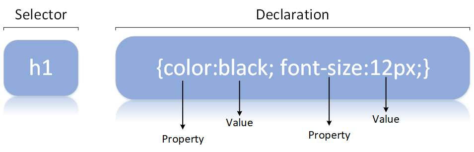

=> can style HTML documents with various colors, styles, layouts, spacing.
=> can create Transitions (animations)
=> Rules and Syntax
=> Simple Styling (color, font, border)
=> More styling (background, opacity)
=> Positioning
=> Pseudo-classes (styling those which aren't even exist at the beginning)

Browser Default Styling
-> Browsers may have their own default styles.
-> most of the default styling appears plain.
Note:
* Tags for styling are replaced with CSS
- Tags must only be used for content.
Comments
-> The stuff inside the /* */ marks are CSS comments.
-> /*-------------*/